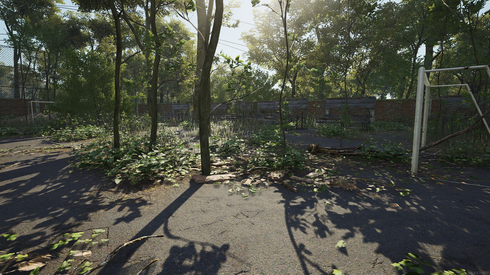
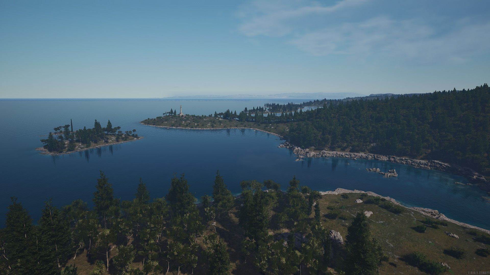
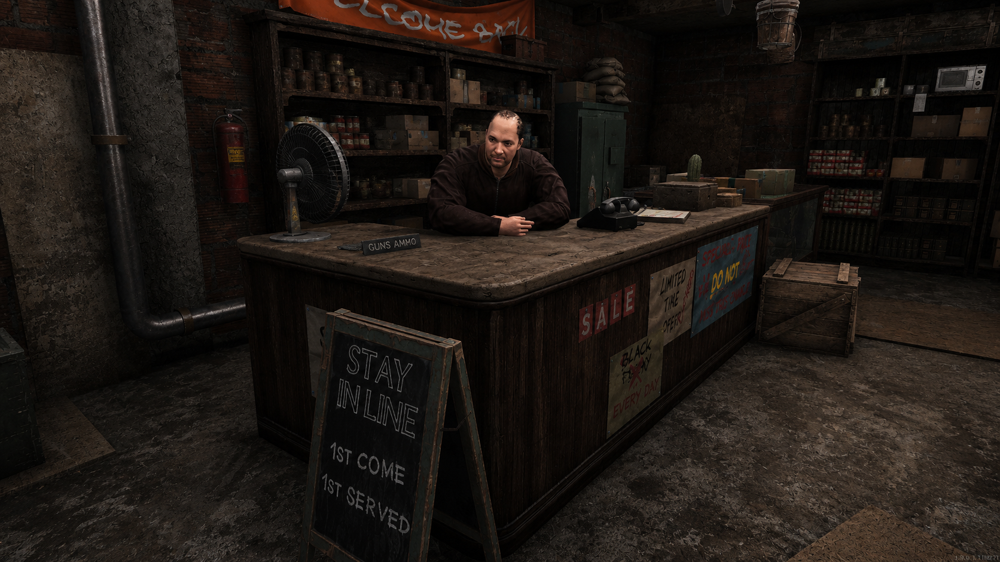
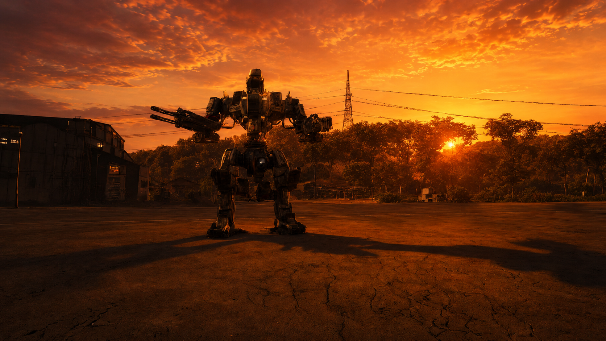

Présentation

Bienvenue sur Arvelys RP
Arvelys RP est un serveur SCUM francophone orienté survie, immersion et jeu de rôle dans un monde post-apocalyptique réaliste.
Ici, il n’y a pas de zombies : vous croisez d’autres humains amicaux ou hostiles, les redoutables Sentinelles, ainsi que les ZDND, des secteurs où les règles et les codes humains semblent avoir été oubliés.
Les largages aériens, vestiges d’une armée énigmatique, attirent les plus audacieux et provoquent souvent des rencontres aussi précieuses que dangereuses.

Une région pleine de mystères
Forêts, villages abandonnés, îles isolées, installations militaires oubliées et infrastructures en ruine composent la région d'Arvelys.
Chaque route peut mener à une découverte, une opportunité... ou un danger.
Les Sentinelles continuent parfois de protéger certains secteurs tandis que les largages militaires attirent régulièrement les survivants les plus audacieux.

Un monde qui vit grâce à vous
L’essence est rare, les traders sont là pour faire des affaires et non pour enrichir les survivants.
Chaque ressource se mérite et chaque décision est un pari dans un monde où tension et immersion dominent.
Les joueurs sont libres de lancer leurs propres projets. Commerce, communauté, groupe de survivants ou événement RP : toute initiative contribuant à faire vivre le serveur est encouragée et peut être accompagnée par le staff.

Explorez. Survivez. Écrivez votre histoire.
Les routes sont longues et dangereuses, mais elles mènent toujours à quelque chose d'inattendu.
Seul ou en groupe, chaque trajet peut devenir une aventure : explorer, commercer, rencontrer... ou affronter.
Arvelys RP ne vous guide pas. C’est à vous de tracer votre propre chemin.

Votre histoire commence ici
Pour mieux comprendre l'univers, les Sentinelles, les ZDND, les largages et les nombreux mystères qui entourent la région, vous pouvez consulter le lore du serveur.
Cette expérience repose sur des réglages serveur pensés pour renforcer la cohérence de l'univers tout en conservant un équilibre entre réalisme, défi et plaisir de jeu.
Plus d'informations ? Votre histoire commence ici.